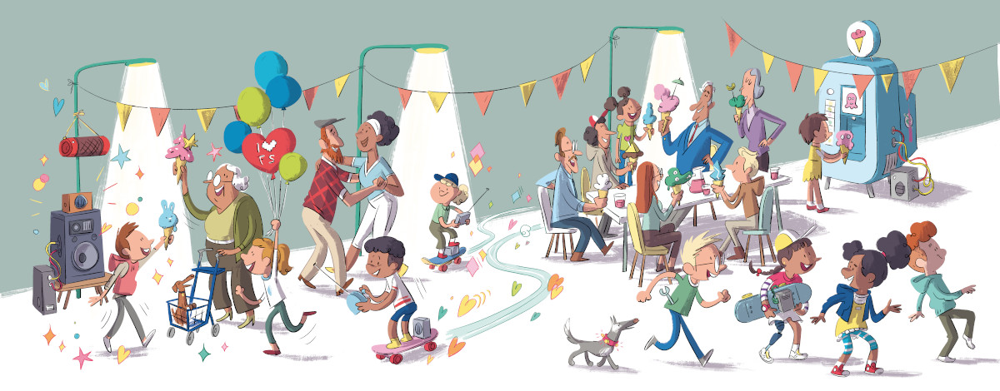
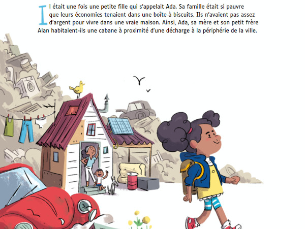

خرید کتاب
نسخهٔ چاپی فارسی اِدا و زِنگمَن برای حمایت از پروژه و لذت بردن از کتاب روی کاغذ. فروش آنلاین هنوز باز نشده؛ مشخصات کتاب را اینجا میبینید و بهمحض آمادهشدن سفارش، همین صفحه بهروز میشود.
کتاب به زبان فارسی

مشخصات
- عنوان: اِدا و زِنگمَن؛ داستانی دربارهٔ نرمافزار، اسکیتبورد و بستنی تمشک
- متن: ماتیاس کیرشنر
- تصویرگری: ساندرا براندشتتر
- ترجمه و بومیسازی: شیرازلینوکس و داوطلبان پروژه
- ابعاد: ۲۱ × ۲۱ سانتیمتر — ۵۶ صفحه — جلد سخت
- شابک: ۹۷۸-۲-۳۷۶۶۲-۰۷۵-۴ (ISBN 978-2-37662-075-4)
مانند نسخهٔ اصلی، این ترجمه تحت مجوز کرییتیو کامنز BY-SA ۴٫۰ منتشر میشود: میتوانید اثر را با ذکر منبع و با همان مجوز بازنشر و اقتباس کنید.
وقتی فروش فعال شود، دکمهٔ سفارش اینجا جایگزین «بهزودی» میشود. از پروژه با خواندن، اشتراکگذاری و بازآفرینی آزاد هم میتوانید حمایت کنید.